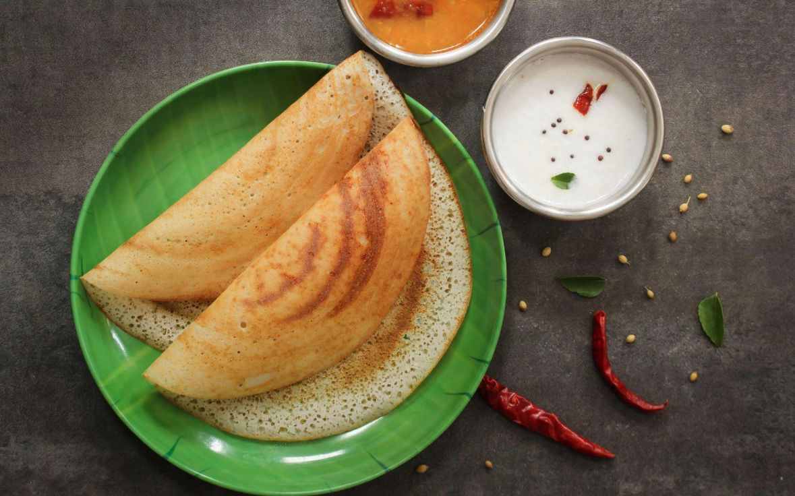
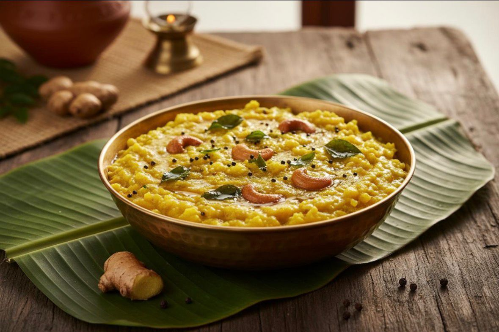
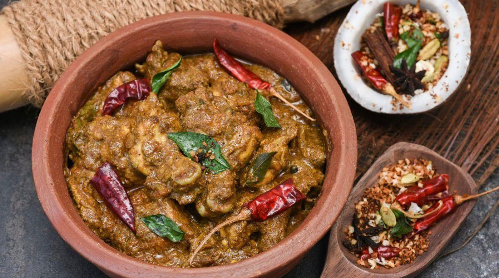

Idli
Ingredients: Rice, urad dal, salt
Description: Soft, steamed rice cakes, a breakfast staple in Tamil Nadu.

Dosa
Ingredients: Rice, urad dal, oil
Description: Thin, crispy crepes made from fermented rice and lentil batter.
Sambar
Ingredients: Toor dal, vegetables, tamarind, spices
Description: A tangy and spicy lentil stew, served with rice or idli/dosa.

Pongal
Ingredients: Rice, moong dal, ghee, pepper, cumin
Description: A comforting rice and lentil dish, often eaten for breakfast.

Chettinad Chicken
Ingredients: Chicken, coconut, spices, curry leaves
Description: A spicy chicken curry from the Chettinad region, known for its bold flavors.